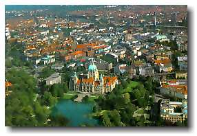
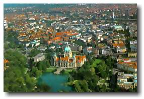
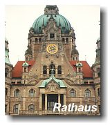
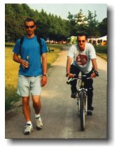
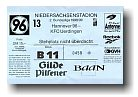
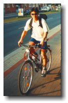
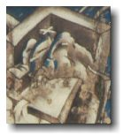
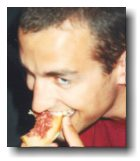
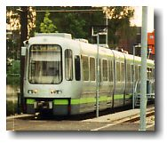

Hannover, Germany

|
Hannover, Germany  |
|
May 1 - September 7, 1999 
Home base, Headquarter, and Residence. That's Hannover for me between May and September 1999. I'm living in a fraternity house (Hannoversche Burschenshaft Germania), which is just a skip away from downtown. About 10 km away is Laser Zentrum Hannover e.V., a laser research center that is employing 8 UBC students including, yours truly. Since their names will come up often, you may want to read a brief description of the other UBC students working and living in Hannover by clicking here. Hannover is a quiet mid size city (pop. 500,000). There are lots of parks and trees here, but more noticeable are the major constructions that are going on for preparation of EXPO 2000. Because it houses the central train station in Northwest Germany, it was heavily bombed in World War 2, leaving 60% of the city flattened. But today, Hannoverians (not an official term) live life just like North Americans. When I came here, I was expecting a drastic change from western life, but other than older buildings, things are pretty much the same. Hannover's pride and joy is their soccer team, Hannover 96. If you attend one of their games, they're favourite chant is "HSV" pronounced "ha es fau", and not "hey asshole", as all us Canadians thought they were saying. The error would have been fine if we kept it to ourselves, but we joined in on the fun. Here's a list of things that caught my eye while in Hannover, but they apply everywhere in Germany: There are dedicated bike lanes everywhere on sidewalks. Good if you're used to it, disastrous if you forget. If you mistakenly jump in front of a speeding cyclist, you're going to get smoked. To give myself the better odd of surviving the sidewalk battle, I bought a bike. Look left or right, someone is always blowing cigarette smoke in your face. The tobacco industry in Germany must be booming. Graffiti everywhere. Whether you look at walls, buildings, or trains, you're most likely to see someone's spray can art. And if you don't, take the opportunity when you see it. Grab a spray can. Germans love their meat. Fruehstueck (breakfast) usually consists of bread, cheese, and meat. Dinner usually consists of bread, cheese, and meat. Lunch is the biggest meal of their day, and usually consists of a lot more meat. A type of spread that Paul and Ben have fallen in love with is the raw meat spread. Fresh ground beef, ready to be laid on top of a piece of bread. At first, I thought it was mixed with cheese, but sometimes my eyes see what they want to, and not the raw fat that they don't. And boy, Germans do live up to the reputation of knowing how to drink. For a 4 day celebration of their 108th anniversary, the fraternity (that I live with) bought eleven 50L kegs for about 50 people. That's 550L of beer. Crazy. We didn't drink it all, but the thought was there. How seriously do Germans take their lunch? You can decide. Everyday at work around 11:45, we (all the students and a few full timers) hop on the tram for a 20~25 min. ride to the Mensa (University Cafeteria). There, we find relatively cheap and greasy German food for lunch. After all is done, we get back to work around 1:30. Isn't that crazy? Hoping on public transit to go for lunch everyday. We would never do that in Canada. From here on in, all cities that I visit will be short term. A few days here and a few days there. It should be fun. |
 johnnyo@canada.com
johnnyo@canada.com